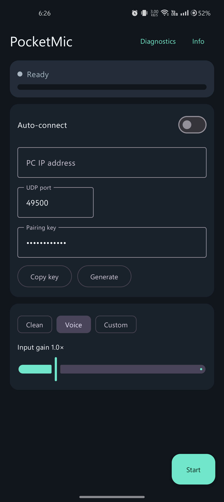
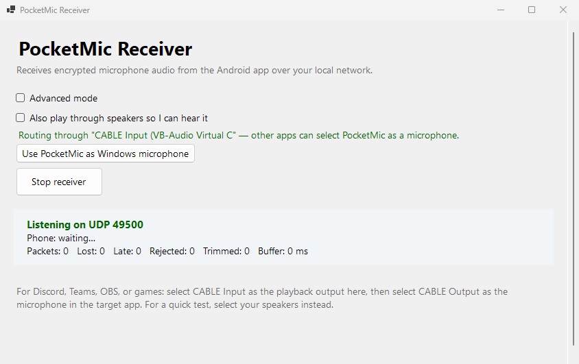

Android → Windows · v0.1.4 · Early release
Your phone.
Your next
PC mic.
Turn your Android phone into a wireless microphone for Windows. For your next voice chat, stream, or call — over your own local network.
- ✓ No account
- ✓ No cloud
- ✓ Open source
- ✓ LAN only


One audio path.
Phone to Windows.


Route into the Windows apps
you already use, via VB-CABLE.
Find your setup
Same phone. Different kind of mic.
Pick what you want to do. Each use case shows the audio route, the right starting point, and the limits worth knowing.
From pocket to PC
Three steps to wireless audio
Both devices stay on your private network. Scan a QR code or type an IP — everything after that is encrypted.
Get both apps
Install the Android APK and extract the Windows receiver ZIP. Connect both to the same Wi-Fi.
Pair your devices
Open the receiver, scan the QR code with your phone. IP, port, and key fill in automatically.
Choose your destination
Route to
CABLE Input. In Discord, OBS, or your app, chooseCABLE Outputas the mic.
VB-CABLE is needed for app routing. It's a separate audio driver from VB-Audio. Install it once — PocketMic does not bundle its own virtual microphone (yet). Coming next: PM-LAN replaces the VB-CABLE dependency.
Voice processing
One layer, not three
PocketMic's Voice mode uses the phone's own voice-communication processing — the vendor-tuned noise suppression, gain control, and echo handling. No stacking.
Voice mode Default
Uses VOICE_COMMUNICATION — the Android source that phone vendors tune for calls. Exactly one processing layer.
Best for: Discord, Teams, calls
Clean mode
Requests the rawest input the phone offers. No phone-side processing.
Best for: recording, podcasting
Custom mode
Clean capture shaped by the receiver's DSP chain on the PC. Sliders on the phone control processing live.
Best for: streaming, broadcasting
Useful by design
Less in the way of your voice
AES-256-GCM encryption
Every packet authenticated. Key derived from a pairing phrase.
QR code pairing
Point your phone camera at the PC screen. No IP addresses to type.
Resilient streaming
Prebuffering, loss concealment, auto-reconnect, Wi-Fi lock policy.
Session diagnostics
Packet counters, jitter stats, Wi-Fi band/RSSI, exportable reports.
Screenshots
Real captures, real hardware
From the v0.1.4 artifacts on a OnePlus 9 Pro and Windows 11 PC. No mockups.

Android Transmitter
QR pairing, capture modes, adjustable gain, live level meter.

Windows Receiver
Auto-discovers VB-CABLE, one-click default mic, voice processing, diagnostics.
Compare
How PocketMic stacks up
| Feature | PocketMic LAN | Bluetooth mic | Discord / Krisp | USB mic |
|---|---|---|---|---|
| Phone as wireless mic | Yes | Yes | No | No |
| Encrypted on the wire | AES-256-GCM | Depends | TLS | N/A |
| LAN only — no cloud | Yes | Yes | No | Yes |
| No account required | Yes | Yes | No | Yes |
| Works with any app | Via VB-CABLE | OS default only | Discord only | Yes |
| Sample rate | 48 kHz | 8–16 kHz | 48 kHz | 48+ kHz |
| Wireless | Yes | Yes | N/A | No |
| Open source | MIT | N/A | No | N/A |
Performance
Measured on real hardware
From a OnePlus 9 Pro and Windows 11 PC over 5 GHz Wi-Fi. A 10 ms packet is not a 10 ms end-to-end claim.
- Prebuffer
- 100 ms
- High-water
- 220 ms
- Concealment
- 200 ms
- Bandwidth
- 768 kbit/s
Adjustable 40–300 ms.
Buffered latency trimmed above this.
Decayed-repeat fill for lost packets.
48 kHz mono PCM16.
Before you download
Good questions. Straight answers.
What do I need?
An Android 8+ phone, a Windows 11 PC, both PocketMic apps, and a trusted private network. Add VB-CABLE to route into other apps.
Is it free?
Yes. MIT licensed. VB-CABLE is a separate third-party download with its own donationware licensing.
Is the Android app on Google Play?
No. The download is the debug-signed APK from the GitHub release. It is not a production-signed store release.
Does it work without internet?
Yes. The phone-to-PC connection is LAN-only. Discord, Teams, or your streaming service may still need internet.
Will there be a delay?
Yes. Capture, networking, buffering, and Windows audio routing add delay. The measured prebuffer is 100 ms. This is not intended for real-time instrument monitoring.
Why not just use Bluetooth?
Bluetooth audio is typically 8–16 kHz. PocketMic streams at 48 kHz — CD quality. Bluetooth also adds its own latency and compression.
Is the audio encrypted?
Every packet uses AES-256-GCM. The key is SHA-256 of your pairing phrase. The control channel uses HMAC-SHA256 with domain separation. LAN-only — do not port-forward.
Will it work on macOS or Linux?
Not yet. The Windows receiver is the only one available. The protocol is documented and simple — other receivers are possible.
Get started
Download PocketMic LAN
Free, open source, MIT licensed. Both apps are required.